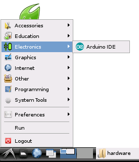
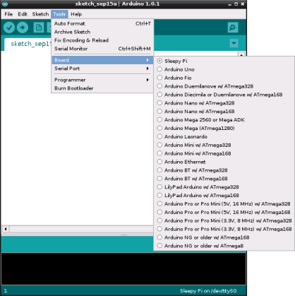
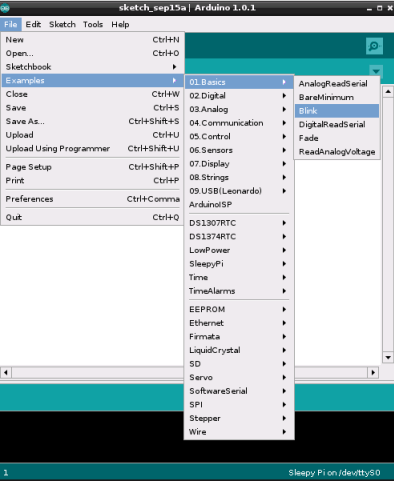
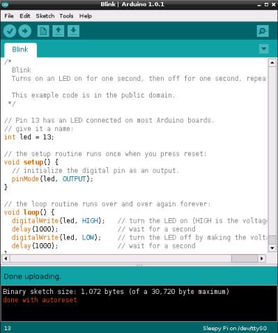

About the photo transmission system
The main function of the photo-transmission system in the camera trap is to store camera pictures and allow the photo-transmission system in the drone to SSH into the Raspberry Pi to rsync the photos into the drone.
Due to the limited power supply the power management arduino shield, Sleepy Pi, is used to turn Raspberry Pi off when not used.
Setting Up Raspbian for Sleepy Pi
The summarized guide below follows the tutorial in the following link: http://spellfoundry.com/sleepy-pi/
Setting up the Arduino IDE on Raspbian
The first step is to load the Arduino environment onto the Raspberry Pi. If you haven’t already done so, it’s a good idea to ensure that your Raspbian is up to date by opening up an LXTerminal window and executing the following:
$ sudo apt-get update
$ sudo apt-get dist-upgrade
Note the dist-upgrade will ensure that you have the latest versions of RPi.GPIO which will be required later. Now install the Arduino IDE with:
$ sudo apt-get install arduino
(click Y to install any required dependencies)
Setting up the Serial Pins
The Arduino processor on the Sleepy Pi can be programmed directly from the Raspberry Pi using the serial GPIO lines on the RPi and another GPIO line to reset the the Arduino to allow automatic code upload. These pins are:
- GPIO 14: TXD
- GPIO 15: RXD
- GPIO 22: Reset (see next section)
By default Raspbian has exclusive access to the serial pins to output status, debug data, and log in.
1. Disable Serial login
Raspbian allows you to login using the serial port. To use the Sleepy Pi we need to disable this. To do this, we need to edit /etc/inittab. In an LXTerminal window type:
$ sudo leafpad /etc/inittab
Scroll down the bottom and you will find the lines:
#Spawn a getty on Raspberry Pi Serial line
T0:23:respawn:/sbin/getty -L ttyAMA0 115200 vt100
You need to comment the last line out (i.e. disabling it) with a “#” and save it, so that it results in:
#Spawn a getty on Raspberry Pi Serial line
#T0:23:respawn:/sbin/getty -L ttyAMA0 115200 vt100
2. Disable Boot Info
When Raspbian boots up it outputs boot information to the serial port and hence streams it to the Sleepy Pi (which is not particularly interested in it). To disable this we need to edit the
/boot/cmdline.txt in LXTerminal:
$ sudo leafpad /boot/cmdline.txt
It will look something like:
dwc_otg.lpm_enable=0 console=ttyAMA0,115200 kgdboc=ttyAMA0,115200
console=tty1 root=/dev/mmcblk0p6 rootfstype=ext4 elevator=deadline
rootwait
Delete the console=ttyAMA0,115200 kgdboc=ttyAMA0,115200 part so that you are left with:
dwc_otg.lpm_enable=0 console=tty1 root=/dev/mmcblk0p6 rootfstype=ext4
elevator=deadline rootwait
This is the file I use: (Should be in the download folder) Link to the full file
3. Link the Serial port to the Arduino IDE
The Arduino IDE wants to use the /dev/ttyS0 serial port, but we need yo use the /dev/ttyAMA0 which is linked to the GPIO. In order to do this we need to create a permanent link that maps AMA0 to S0. To this we need to create a small file. We can do this in LXTerminal by the following sequence:
$ sudo leafpad
In the new file that it creates type the following:
KERNEL=="ttyAMA0", SYMLINK+="ttyS0",GROUP="dialout",MODE:=0666
KERNEL=="ttyACM0", SYMLINK+="ttyS1",GROUP="dialout",MODE:=0666
Save this file as a new file called 80-sleepypi.rules to: /etc/udev/rules.d/
This is the one I use: (Should be in the download folder) Link to the full file
Setting up the Reset (DTR) pin
The Sleepy Pi Arduino processor reset line in connected to GPIO 22. To automatically upload code from the Arduino IDE we need to pulse this line low to reset the Arduino and enter bootload mode.
On a normal Arduino system connected to a computer via a USB / serial cable the reset line is connected to the DTR line. To replicate this behavior on the Raspberry Pi we need to hack the AVRDude programming software. Dean Mao has detailed a great hack for this. He’s produced a modified version of Avrdude (avrdude-autoreset) and written a piece of python code (autoreset) that runs in the background and pulses the GPIO line when required.
Use the following from the command lines to download and unzip :
wget https://github.com/SpellFoundry/avrdude-rpi/archive/master.zip
sudo unzip master.zip
Next, copy the files to the appropriate places from a LXTerminal window using the following commands:
$ cd ./avrdude-rpi-master/
$ sudo cp autoreset /usr/bin
$ sudo cp avrdude-autoreset /usr/bin
$ sudo mv /usr/bin/avrdude /usr/bin/avrdude-original
This renames your original avrdude, so that you have a backup and can replace it with the new one.
$ sudo ln -s /usr/bin/avrdude-autoreset /usr/bin/avrdude
Link the new avrdude-autoreset to avrdude so that when something calls for avrdude, the new version runs instead.
Adding the Sleepy Pi to the Arduino environment
To enable the Sleepy Pi to be selected from the IDE you need to add a folder and file to your sketchbook. If it is a fresh install and you haven’t yet run the Arduino environment you’ll need to create a sketchbook folder (skip this step if it already exists).
In LXTerminal type:
$ mkdir /home/pi/sketchbook
$ mkdir /home/pi/sketchbook/hardware
$ mkdir /home/pi/sketchbook/hardware/Sleepy_pi
to create folders “hardware” and “sleepy pi” in your Arduino sketchbook. Download and copy the boards.txt file to the Sleepy Pi folder. Download the boards.txt file
This file should look like this:
sleepypi.name=Sleepy Pi
sleepypi.upload.protocol=arduino
sleepypi.upload.maximum_size=30720
sleepypi.upload.speed=57600
sleepypi.bootloader.low_fuses=0xFF
sleepypi.bootloader.high_fuses=0xDA
sleepypi.bootloader.extended_fuses=0x05
sleepypi.bootloader.path=arduino:atmega
sleepypi.bootloader.file=ATmegaBOOT_168_atmega328_pro_8MHz.hex
sleepypi.bootloader.unlock_bits=0x3F
sleepypi.bootloader.lock_bits=0x0F
sleepypi.build.mcu=atmega328p
sleepypi.build.f_cpu=8000000L
sleepypi.build.core=arduino:arduino
sleepypi.build.variant=arduino:standard
And finally reboot your Raspberry Pi to complete and load all our changes. You can use:
$ sudo reboot
Getting the Sleepy Pi to Shutdown the Raspberry Pi
The Sleepy Pi has the ability to co-ordinate a shutdown of the Raspberry Pi via two GPIO handshake lines:
- GPIO 24: Command the RPi to shutdown
- GPIO 25: Raspberry Pi is running
Software must be running on both the Raspberry Pi and also the Sleepy Pi that react to these signals. From the Sleepy Pi’s perspective, the shutdown sequence is as follows:
- Set GPIO 24 high to signal that we are going to shutdown
- Monitor GPIO 25, wait for it to go low indicating that the Raspberry Pi software has stopped running
- Cut the power to the Raspberry Pi
From the Raspberry Pi’s perspective, the shutdown sequence is as follows:
- Set GPIO 25 to indicate that we are running
- Monitor GPIO 24 for a command to shutdown
- When we receive a command to shutdown issue a
sudo shutdown -h nowcommand
To properly handshake, the Raspberry Pi must install a script that runs at boot and continues in the background setting and monitoring the handshake lines.
Copy the following script to /home/pi/bin/button/
It is possible that the directory doesn't exist. Make it with:
$ mkdir /home/pi/bin
$ mkdir /home/pi/bin/button
The shutdowncheck.py script looks like this:
#!/usr/bin/python
import RPi.GPIO as GPIO
import os, time
GPIO.setmode(GPIO.BCM)
GPIO.setup(24, GPIO.IN)
GPIO.setup(25, GPIO.OUT)
GPIO.output(25, GPIO.HIGH)
print ("[Info] Telling Sleepy Pi we are running pin 25")
while True:
if (GPIO.input(24)):
print ("Sleepy Pi requesting shutdown on pin 24")
os.system("sudo shutdown -h now")
break
time.sleep(0.5)
To run this script at startup, we must edit the /etc/rc.local
In LXTerminal:
$ sudo leafpad /etc/rc.local
and insert the following line just before the final exit 0 and save changes:
python /home/pi/bin/button/shutdowncheck.py &
DO NOT forget the “&” which allows the script to run in the background! (This script is based on this one)
NOTE: On a fresh PI install you will need to set the permissions on /etc/rc/local so that it can execute at startup. To do this execute the following command from a terminal window:
sudo chmod u+x /etc/rc.local
Installing Sleepy Pi and related libraries.
Move the libraries from the download and put them in your /home/pi/sketchbook folder in the Raspberry Pi.
Make sure that the Sketchbook location in File > Preferences is set to /home/pi/sketchbook
Mounting Camera Trap on Startup
IMPORTANT: This link explains the entirety of the following procedure.
Solving the problem with mounting SD card
To be able to access the SD card on the camera trap form the Raspberry Pi special steps are required. If you don’t start GUI, the SD card does not get mounted automatically and it does not appear in the directories
To solve the problem:
- connect the usb device - sd card or hdd
- use command
sudo fdisk -lto list the available storage drives - camera trap SD card should be under the path
/dev/sda1 - if you accessed the camera trap from GUI before, the SD card should already have a folder created for it in
/mediaprobably a folder name with number in it such as/media/6639-3235 - to create folder for the storage device
sudo mkdir /media/usbhdd - permission problem may occur during transfer - you must make user pi the owner of the folder to avoid these issues:
sudo chown pi:pi /media/usbhdd - finally to mount the disk:
sudo mount -t vfat -o uid=pi,gid=pi /dev/sda1 /media/usbhdd - finally unmount:
sudo umount /media/usbhdd
Mount automatically on startup:
- edit the file system table:
sudo nano /etc/fstab. You need to use sudo because the fstab file is owned by root. - You should see something like this:
proc /proc proc defaults 0 0
/dev/mmcblk0p1 /boot vfat defaults 0 2
/dev/mmcblk0p2 / ext4 defaults,noatime 0 1
- Add the following line, and save the file.
/dev/sda1 /media/usbhdd vfat uid=pi,gid=pi 0 0
- Reboot your Pi and you should be able to access your USB drive via
/media/usbhdd.
Uploading Arduino Parser to SleepyPi
Arduino Parser is our name for the software that runs on the Sleepy Pi. Download the Arduino Parser from this link and upload it to SleepyPi. This can be done either through Raspberry Pi or through any computer.
The Arduino IDE can be found on the Main GUI menu in the Electronics section.

Once loaded the Sleepy Pi should be selected as a target from the Tools menu.

To test that you can program the Arduino correctly the “Blink” sketch is always a favourite. It can be found from the File > Examples > 01.Basics > Blink menu.

Press the “Upload” button and the sketch will be compiled and uploaded. You should see a message from the “autoreset” displayed in the bottom status area.

If the sketch is successfully loaded, then the amber LED will begin flashing.